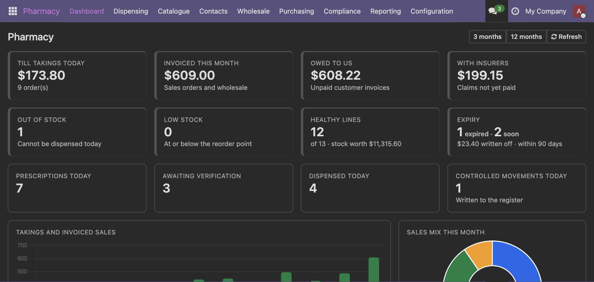
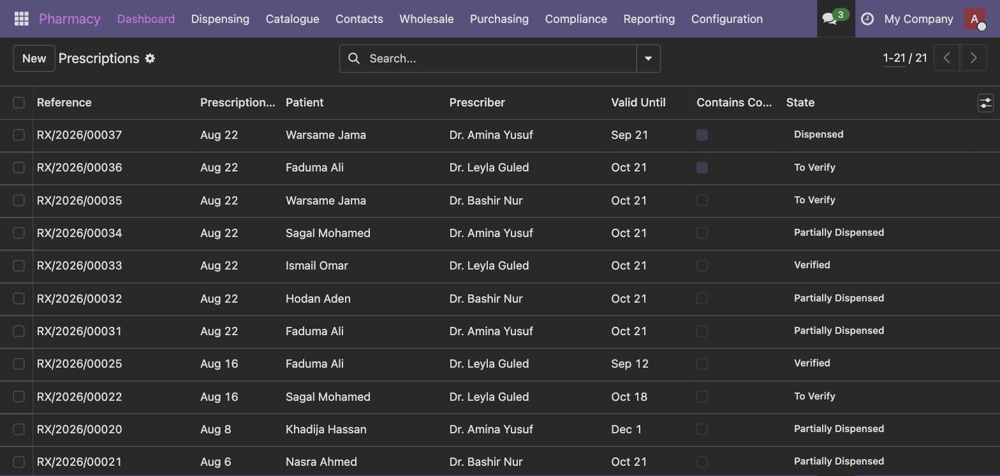

Run a retail counter, a wholesale operation, or both — with the controls a pharmacy is actually held to: prescription rules, batch and expiry tracking, and a controlled drugs register that writes itself.
This is the difference that shows up six months in.
Medicines are products. Patients, prescribers and suppliers are contacts. Batches are stock lots. Dispensing creates a real sale order and moves real stock; billing posts real journal entries.
So Inventory, Purchase, Sales, Point of Sale and Accounting all work on your pharmacy data directly — your stock valuation, your tax return and your reorder rules are the ones Odoo already gives you. Nothing here is a parallel set of numbers that has to be reconciled with the real ones.

Prescription, OTC, supplement, medical device and cosmetic. Generic-to-brand relations, active ingredients, dosage forms and routes, structured strength, ATC and therapeutic class, GTIN, cold-chain range, and flags for antibiotic, high-alert, hazardous, paediatric and veterinary.
Pharmacist verification, validity and refills, partial dispensing, and dispensing that creates a real sale order and moves real stock with the batch captured.
A restricted register where every movement is logged automatically, handover is limited to a pharmacist, and disposal is witnessed.
Pharmaceutical licence with expiry and issuing authority, approved-supplier status, approval per product, and purchase orders that warn or block on an unapproved or unlicensed vendor.
The batch, the condition it came back in, and a pharmacist's decision to restock or destroy — kept separate from whether the customer is refunded.
The copay split, the claim's life with the insurer, and the insurer invoiced only once they have agreed.
A prescription is written, checked, verified by a pharmacist, then dispensed — and each of those steps is enforced, not just recorded.

Every medicine batch-tracked with an expiry date, because "how many boxes" is never the whole question.
The earliest-expiring usable batch is offered first, on the dispensing screen and at the till.
Expired and near-expiry stock reported with the value attached, so you can see what it is about to cost you.
Out of stock, low stock, dead stock and expiry loss, with a daily internal digest to pharmacy managers. Nothing here contacts a customer.
Five roles that build on each other, so people see their own job.
| Role | Can do |
|---|---|
| Cashier | Sell over-the-counter medicines and take payment. Cannot verify prescriptions or handle controlled drugs. |
| Technician | Everything above, plus prepare and dispense non-controlled prescriptions. |
| Pharmacist | Verify prescriptions, sign off clinical warnings, dispense controlled drugs and sign the register. |
| Manager | Full access — set up medicines, release credit holds, authorise overrides, run reports. |
| Auditor | Read-only across the register, dispensing history and the override log, for compliance checks. |
One module. No suite, no dependency chain of your own to manage.
| Technical name | What it is |
|---|---|
| sahal_pharmacy | Pharmacy Management — the complete app. Everything described on this page is in this one module. |
241 automated checks ship inside the module under tests/ — twelve suites covering the product master, suppliers, wholesale, reporting, till isolation, clinical safety, returns, expiry and FEFO, compliance, insurance, stock intelligence and the dashboard. Every suite rolls its transaction back, so you can run them against your own database:
odoo shell -d yourdb --no-http < tests/ph1_product_master_check.py
The module also ships a full README.md covering install, roles, first-time setup and everyday use.
B&T Solutions · support@bandtsolutions.com · bandtsolutions.com
Licence OPL-1. Version 19.0.3.0.0.